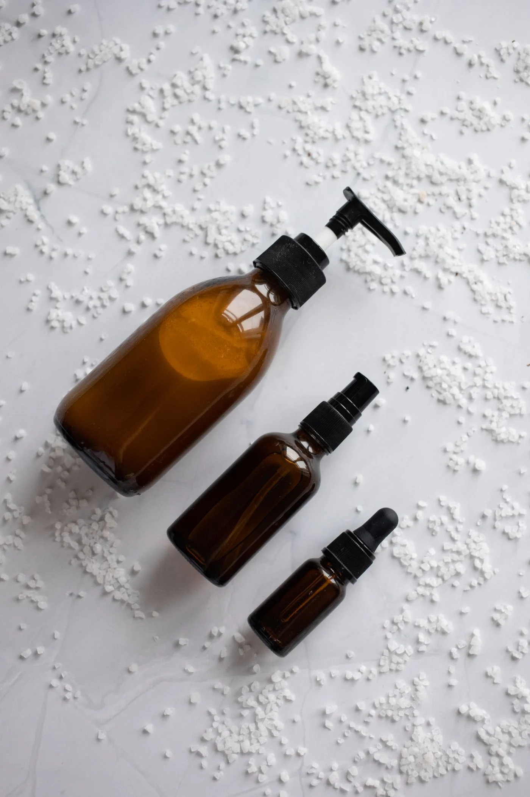
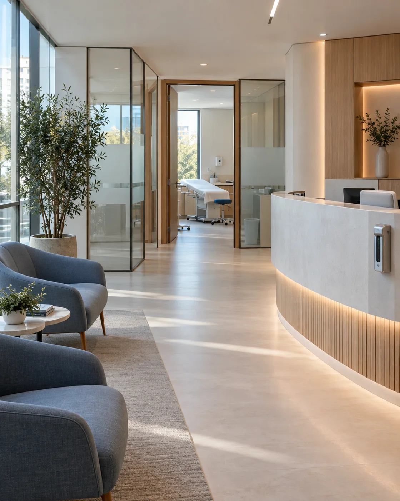

Faciais
Limpeza de pele
Um novo começo para a sua rotina de cuidado.
Um espaço dedicado ao autocuidado, à confiança e à valorização da sua beleza natural.
Permita-se esse momentoDescubra possibilidades de cuidado para a sua pele, o seu corpo e o seu bem-estar.
Um novo começo para a sua rotina de cuidado.
Uma pausa delicada para cuidar da sua pele.
Atenção ao corpo, respeito ao seu ritmo.
Desacelerar também faz parte de se cuidar.

CorporaisCuidado individualizado, da cabeça aos pés.
Valorize o que faz a sua beleza ser única.
Tratamentos demonstrativos. A indicação de cada cuidado depende de avaliação profissional.

Acreditamos que cuidar de si começa com se sentir à vontade. Na LUMIÈRE, a proposta é receber cada pessoa com atenção, escutar suas expectativas e respeitar o seu tempo.
Da luz que entra à conversa que acolhe, cada detalhe convida você a desacelerar. Um cuidado leve, próximo e feito para o seu momento.
Uma boa conversa para entender o que faz sentido para você.
Luz, conforto e detalhes que convidam a uma pausa.
Atenção às suas preferências, às suas necessidades e ao seu tempo.
Um encontro com o autocuidado, do começo ao fim.
Diferenciais ilustrativos da proposta de atendimento.
Pessoas que escutam, acolhem e colocam o seu cuidado no centro de cada encontro.
Um olhar atento para acolher suas expectativas e conversar sobre o seu cuidado.
Escuta e delicadeza em uma proposta de atenção individualizada ao corpo.
Presença e atenção aos detalhes para tornar cada encontro mais confortável.
Equipe demonstrativa: nomes e funções fictícios. Fotos de banco de imagens não representam esses perfis; não há registros ou qualificações reais associados.
Luz, texturas e espaços que inspiram uma pausa.
Galeria de referências visuais. Estes ambientes não representam uma clínica real.
Depoimentos demonstrativos — exemplos de layout, sem avaliações ou resultados reais.
O cuidado começa na forma de receber. Um espaço que transmite calma em cada detalhe.
Ter um momento para mim, com atenção e tranquilidade, faz toda a diferença na experiência.
Uma conversa atenta e um ambiente confortável tornam o autocuidado ainda mais especial.
Comece com uma conversa. Conheça a proposta de cuidado e encontre espaço para o seu autocuidado.
Uma conversa acolhedora é o primeiro passo.Um espaço para chegar com calma e se sentir à vontade.
Endereço a confirmar
Horários a confirmar
Contato a confirmar
O mapa será exibido quando
o endereço real for confirmado.
Algumas respostas para você dar o primeiro passo com tranquilidade.
Use o botão Agendar avaliação. Quando o WhatsApp estiver configurado, ele abrirá uma conversa com uma mensagem pronta. Nesta demonstração, você verá um aviso explicativo.
Este modelo apresenta exemplos de cuidados faciais, corporais e de bem-estar. A oferta real de serviços deve ser confirmada com a clínica antes de agendar.
Uma avaliação profissional é o primeiro passo para conversar sobre expectativas e conhecer as opções adequadas ao seu caso. Este site não fornece recomendações médicas individualizadas.
Os horários reais aparecem na seção Localização depois de configurados. Enquanto não forem preenchidos, confirme essa informação com o responsável pelo atendimento.
WhatsApp, telefone e Instagram podem ser configurados para uso real. Nesta versão, os canais ainda não estão ativos e nenhum pedido é enviado.